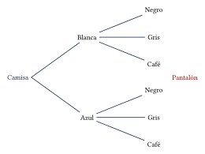

Capítulo 48
Técnicas de conteo y probabilidad avanzada
IPN CENEVAL
Las técnicas de conteo permiten calcular el número de resultados posibles sin enumerarlos uno por uno.
Sus principales aplicaciones son:
- contar resultados de experimentos con varias etapas;
- ordenar objetos;
- seleccionar grupos;
- calcular probabilidades;
- desarrollar potencias de binomios.
48.1 ¿Qué técnica conviene utilizar?#
Antes de aplicar una fórmula, responde las siguientes preguntas:
- ¿El procedimiento tiene varias etapas?
- ¿Se utilizan todos los elementos o solo algunos?
- ¿Importa el orden?
- ¿Se permite la repetición?
| Situación | ¿Importa el orden? | Técnica |
|---|---|---|
| Varias etapas | Depende | Principio multiplicativo |
| Ordenar todos los elementos | Sí | Factorial |
| Elegir y ordenar \(r\) de \(n\) | Sí | Permutación |
| Elegir \(r\) de \(n\) | No | Combinación |
48.2 Principios de conteo#
48.2.1 Principio multiplicativo#
Si una actividad se realiza en varias etapas y las cantidades de opciones son:
el número total de resultados es:
En palabras:
Un restaurante ofrece:
¿Cuántos menús de tres tiempos pueden formarse?
Ver solución
Por cada entrada existen \(5\) opciones de platillo y, para cada una, \(4\) opciones de postre.
Por tanto:
Se pueden formar:
¿Cuántas placas pueden formarse con \(3\) letras seguidas de \(3\) dígitos si se permite la repetición?
Ver solución
Cada letra tiene:
posibilidades y cada dígito tiene:
posibilidades.
Por tanto:
El número de placas es:
48.2.2 Principio aditivo#
Si una elección puede realizarse mediante procedimientos mutuamente excluyentes con:
y:
posibilidades, el total es:
Una persona puede viajar a una ciudad mediante \(4\) rutas de autobús o \(3\) rutas de tren.
¿Cuántas opciones de viaje existen?
Ver solución
Como se elige autobús o tren:
Existen:
El principio multiplicativo se relaciona con la palabra y.
El principio aditivo se relaciona con la palabra o, cuando las opciones no se traslapan.
48.3 Representación mediante un árbol#
El principio multiplicativo puede visualizarse mediante un diagrama de árbol.
Una persona elige una camisa blanca o azul y un pantalón negro, gris o café.
El número de conjuntos es:

48.4 Factorial#
El factorial de un entero positivo \(n\) es:
Por definición:
Algunos valores son:
Simplifica:
Ver solución
Desarrollamos solamente los factores necesarios:
Entonces:
Cancelamos:
Por tanto:
El factorial no se distribuye sobre una suma:
Tampoco debe calcularse un factorial completo cuando existen factores que pueden cancelarse.
48.5 Permutaciones#
Una permutación es un arreglo en el que el orden importa.
48.5.1 Permutación de todos los elementos#
El número de maneras de ordenar \(n\) elementos distintos es:
¿De cuántas formas pueden ordenarse las letras de la palabra AMOR?
Ver solución
La palabra tiene \(4\) letras diferentes.
Por tanto:
Existen:
48.5.2 Permutaciones de \(n\) elementos tomados de \(r\)#
Si se seleccionan y ordenan \(r\) elementos de un conjunto de \(n\), se utiliza:
También puede escribirse:
En una carrera participan \(8\) corredores.
¿De cuántas formas pueden asignarse oro, plata y bronce?
Ver solución
El orden importa porque los lugares son diferentes.
Por tanto:
¿Cuántas palabras de \(3\) letras pueden formarse con las letras de MESA, sin repetición?
Ver solución
Se eligen y ordenan \(3\) de las \(4\) letras:
Por tanto:
48.6 Permutaciones con elementos repetidos#
Si hay \(n\) elementos, pero algunos son iguales, el número de ordenamientos distintos es:
donde:
¿Cuántos ordenamientos diferentes pueden formarse con las letras de la palabra CASA?
Ver solución
La palabra tiene \(4\) letras, pero la letra A aparece \(2\) veces.
Por tanto:
El número de ordenamientos es:
¿Cuántos ordenamientos diferentes pueden formarse con las letras de la palabra MATEMATICA?
Ver solución
La palabra tiene \(10\) letras.
Las repeticiones son:
Las demás letras aparecen una vez.
Por tanto:
48.7 Arreglos con repetición#
Si se forman secuencias de longitud \(r\) utilizando \(n\) opciones y se permite repetir, el número de resultados es:
¿Cuántas claves de \(4\) dígitos pueden formarse utilizando los dígitos del \(0\) al \(9\) si se permite repetición?
Ver solución
Cada posición tiene \(10\) posibilidades.
Por tanto:
Una clave puede comenzar con cero.
Un número de cuatro cifras no puede comenzar con cero.
Aunque ambos problemas utilizan dígitos, no tienen la misma cantidad de resultados.
48.8 Combinaciones#
Una combinación es una selección en la que el orden no importa.
El número de maneras de elegir \(r\) elementos de un conjunto de \(n\) es:
¿De cuántas formas puede elegirse un comité de \(3\) personas de un grupo de \(10\)?
Ver solución
El orden no importa.
Simplificamos:
Por tanto:
De una baraja de \(52\) cartas se eligen \(5\).
¿Cuántas manos diferentes pueden formarse?
Ver solución
El orden de las cartas no importa.
Por tanto:
Una urna contiene \(5\) canicas rojas y \(4\) azules.
¿De cuántas formas pueden elegirse \(2\) rojas y \(1\) azul?
Ver solución
Elegimos \(2\) de las \(5\) rojas:
Elegimos \(1\) de las \(4\) azules:
Por el principio multiplicativo:
Por tanto:
48.9 ¿Permutación o combinación?#
La pregunta principal es:
Si la respuesta es sí, se utiliza una permutación.
Si la respuesta es no, se utiliza una combinación.
| Situación | ¿Importa el orden? | Técnica |
|---|---|---|
| Oro, plata y bronce | Sí | Permutación |
| Presidente y secretario | Sí | Permutación |
| Comité de tres personas | No | Combinación |
| Mano de cinco cartas | No | Combinación |
| Código o contraseña | Sí | Principio multiplicativo |
Existe la relación:
Cada selección de \(r\) elementos puede ordenarse de:
formas diferentes.
48.10 Selecciones con cargos#
Cuando un grupo incluye cargos diferentes, el orden sí importa.
De un grupo de \(8\) personas se eligen:
- una presidencia;
- una secretaría;
- una tercera persona sin cargo.
¿Cuántas elecciones son posibles?
Ver solución
Elegimos la presidencia de:
formas.
Después elegimos la secretaría de:
formas.
Finalmente elegimos la tercera persona de:
formas.
Por tanto:
También puede verse como:
Primero se elige el grupo de tres y después se asignan los dos cargos.
48.11 Probabilidad mediante técnicas de conteo#
Si todos los resultados son igualmente probables:
Las combinaciones y permutaciones permiten calcular ambas cantidades.
De un grupo de \(6\) hombres y \(4\) mujeres se elige al azar un comité de \(3\) personas.
Calcula la probabilidad de que el comité esté formado por \(2\) hombres y \(1\) mujer.
Ver solución
El total de personas es:
El número total de comités es:
Los comités favorables se forman eligiendo:
y:
Por tanto:
La probabilidad es:
Por tanto:
Se lanzan \(3\) monedas.
Calcula la probabilidad de obtener exactamente \(2\) águilas.
Ver solución
Cada lanzamiento tiene \(2\) resultados posibles.
El número total de secuencias es:
Elegimos en cuáles \(2\) de los \(3\) lanzamientos aparece águila:
Por tanto:
Una urna contiene \(6\) canicas rojas y \(5\) verdes. Se eligen \(4\) canicas al azar.
Calcula la probabilidad de obtener exactamente \(2\) rojas y \(2\) verdes.
Ver solución
El total de canicas es:
El número total de selecciones es:
Los casos favorables son:
Por tanto:
Calculamos:
Así:
Por tanto:
48.12 Binomio de Newton#
Para un entero no negativo \(n\):
El término general es:
Los coeficientes:
son llamados coeficientes binomiales.
48.12.1 Triángulo de Pascal#
Cada número interior es la suma de los dos números colocados arriba.
Las primeras expansiones son:
Desarrolla:
Ver solución
Los coeficientes de la fila correspondiente a \(n=3\) son:
Entonces:
Simplificamos:
Desarrolla:
Ver solución
Escribimos:
Aplicamos el binomio:
Simplificamos:
48.13 Coeficiente de un término#
Para encontrar un término específico no es necesario desarrollar todo el binomio.
Se utiliza:
Encuentra el coeficiente de \(x^2\) en:
Ver solución
El término general es:
Para obtener \(x^2\):
Por tanto:
El término correspondiente es:
El coeficiente es:
Encuentra el coeficiente de \(x^3\) en:
Ver solución
El término general es:
Para obtener \(x^3\):
Por tanto:
El coeficiente es:
Por tanto, el coeficiente es:
48.14 Procedimiento rápido#
Problemas de conteo#
- Identifica las etapas.
- Determina si importa el orden.
- Revisa si se permite repetición.
- Selecciona la fórmula.
- Simplifica antes de calcular factoriales completos.
Probabilidad con conteo#
- Cuenta todos los resultados posibles.
- Cuenta los resultados favorables.
- Calcula: \[P(A) = \frac{\text{favorables}}{\text{totales}}.\]
- Simplifica la fracción.
Binomio de Newton#
- Identifica: \[a,\quad b,\quad n.\]
- Utiliza: \[T_{k+1} = \binom nk a^{n-k}b^k.\]
- Controla los exponentes y los signos.
- Simplifica cada término.
48.15 Resumen#
Principio multiplicativo:
Factorial:
Permutación:
Combinación:
Permutación con elementos repetidos:
Secuencias con repetición:
Relación entre permutación y combinación:
Binomio de Newton:
48.16 Errores frecuentes#
Recuerda:
- Antes de utilizar una fórmula, determina si el orden importa.
- En una combinación, cambiar el orden no produce una nueva selección.
- En una permutación, cambiar el orden sí produce un nuevo resultado.
- Si se permite repetición, las opciones pueden permanecer iguales en cada posición.
- Si no se permite repetición, las opciones disminuyen.
- En las permutaciones con objetos repetidos deben dividirse los factoriales de las repeticiones.
- Se cumple: \[0!=1.\]
- La probabilidad clásica requiere resultados igualmente probables.
- En el binomio, el exponente de la primera expresión disminuye y el de la segunda aumenta.
- Si el binomio contiene una resta, deben cuidarse los signos de las potencias.
- No es necesario desarrollar todo el binomio para encontrar un solo coeficiente.
48.17 Ejercicios propuestos#
Una tienda vende:
y:
¿Cuántos conjuntos diferentes pueden formarse?
Ver solución
¿Cuántas placas pueden formarse con \(2\) letras seguidas de \(4\) dígitos si se permite la repetición?
Utiliza un alfabeto de \(26\) letras y los dígitos del \(0\) al \(9\).
Ver solución
Evalúa:
- \(P(6,2)\);
- \(P(5,5)\);
- \(\displaystyle\binom73\);
- \(\displaystyle\binom{10}{7}\).
Ver solución
- \(P(6, 2) = \dfrac{6!}{4!} = 6 \cdot 5 = 30\).
- \(P(5, 5) = 5! = 120\).
- \(\binom{7}{3} = \dfrac{7!}{3!\,4!} = \dfrac{7 \cdot 6 \cdot 5}{3 \cdot 2 \cdot 1} = 35\).
- \(\binom{10}{7} = \binom{10}{3} = \dfrac{10 \cdot 9 \cdot 8}{3 \cdot 2 \cdot 1} = 120\).
¿De cuántas formas pueden sentarse \(5\) personas en una fila de \(5\) asientos?
Ver solución
El orden importa y se usan todos los elementos: \[5! = 120 \text{ formas}.\]
¿Cuántas palabras de \(4\) letras distintas pueden formarse con las letras de la palabra PERÚ?
Ver solución
Son 4 letras distintas y se usan todas: \[P(4, 4) = 4! = 24 \text{ palabras}.\]
¿Cuántos ordenamientos distintos pueden formarse con las letras de la palabra CASA?
Ver solución
La palabra CASA tiene 4 letras, pero la 'A' se repite 2 veces. Por lo tanto, se usan permutaciones con elementos repetidos: \[\frac{4!}{2!} = \frac{24}{2} = 12 \text{ ordenamientos}.\]
Un equipo tiene \(15\) jugadores.
¿De cuántas formas pueden elegirse los \(11\) titulares?
Ver solución
El orden no importa al elegir a los titulares: \[\binom{15}{11} = \binom{15}{4} = \frac{15 \cdot 14 \cdot 13 \cdot 12}{24} = 1365 \text{ formas}.\]
De un grupo de \(8\) personas se eligen \(3\) para un comité.
Una de las personas seleccionadas será presidenta y otra será secretaria. La tercera no tendrá un cargo especial.
¿De cuántas formas puede realizarse la elección?
Ver solución
Importa el orden para los cargos. Primero elegimos a la presidenta (8 opciones), luego a la secretaria (7 opciones) y por último al miembro sin cargo de entre las restantes (6 opciones). \[8 \cdot 7 \cdot 6 = 336 \text{ formas}.\]
En una urna hay \(6\) canicas rojas y \(5\) verdes. Se extraen \(4\) canicas al azar.
Calcula la probabilidad de obtener exactamente \(2\) rojas y \(2\) verdes.
Ver solución
Casos totales: \(\binom{11}{4} = 330\).
Casos favorables: \(\binom{6}{2} \cdot \binom{5}{2} = 15 \cdot 10 = 150\). \[P = \frac{150}{330} = \frac{5}{11} \approx 0.4545.\]
Se lanzan \(5\) monedas.
Calcula la probabilidad de obtener exactamente \(3\) águilas.
Ver solución
Cada moneda tiene 2 resultados posibles, en total hay \(2^5 = 32\) resultados posibles.
Para obtener exactamente 3 águilas, se usa la combinación \(\binom{5}{3} = 10\). \[P = \frac{10}{32} = \frac{5}{16}.\]
Desarrolla:
Ver solución
Con \(a = 2x\), \(b = -1\) y \(n = 4\): \[\begin{aligned} (2x - 1)^4 &= \binom{4}{0}(2x)^4 + \binom{4}{1}(2x)^3(-1) \\ &\quad + \binom{4}{2}(2x)^2(-1)^2 + \binom{4}{3}(2x)(-1)^3 + \binom{4}{4}(-1)^4 \\ &= 16x^4 - 4(8x^3) + 6(4x^2) - 4(2x) + 1 \\ &= 16x^4 - 32x^3 + 24x^2 - 8x + 1. \end{aligned}\]
Desarrolla:
Ver solución
Con \(a = x\), \(b = 3\) y \(n = 5\): \[\begin{aligned} (x + 3)^5 &= \binom{5}{0}x^5 + \binom{5}{1}x^4(3) + \binom{5}{2}x^3(3)^2 \\ &\quad + \binom{5}{3}x^2(3)^3 + \binom{5}{4}x(3)^4 + \binom{5}{5}(3)^5 \\ &= x^5 + 5x^4(3) + 10x^3(9) + 10x^2(27) + 5x(81) + 243 \\ &= x^5 + 15x^4 + 90x^3 + 270x^2 + 405x + 243. \end{aligned}\]
Encuentra el coeficiente de \(x^3\) en:
Ver solución
El término general es \(\binom{6}{k} x^{6-k} 2^k\). Para que el término tenga \(x^3\), se requiere \(6 - k = 3\), es decir, \(k = 3\): \[\binom{6}{3} x^3 \cdot 2^3 = 20 \cdot x^3 \cdot 8 = 160x^3.\] El coeficiente es \(160\).
Encuentra el término que contiene \(x^4\) en:
Ver solución
El término general es \(\binom{7}{k} (2x)^{7-k} (-3)^k\). Para obtener \(x^4\), necesitamos \(7 - k = 4 \implies k = 3\): \[\binom{7}{3} (2x)^4 (-3)^3 = 35 \cdot (16x^4) \cdot (-27) = -15120x^4.\] El término que contiene \(x^4\) es \(-15120x^4\).